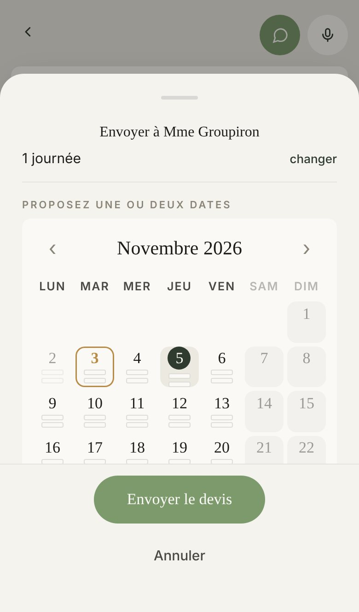

Proposé

Ta note : Mme Groupiron la lira juste avant « J'accepte ce devis ».
Aujourd'hui
Ce qui change
- Ton devis porte une note : quand tu touches « Choisir la date », la feuille d'envoi s'ouvre, et une fenêtre descend en haut de l'écran.
- Elle montre la page de ton client en petit, la note en or à sa place, et une phrase : où il la lira.
- Elle part seule au bout de 4 secondes ; le trait d'or dessous se vide pour le montrer. Un appui la ferme avant.
- Sans note, rien n'apparaît. Touchez « Sans note ».
Ce qui ne bouge pas
- La feuille d'envoi elle-même : le fond du téléphone est la vraie, photographiée.
- « Envoyer le devis » ouvre toujours ta messagerie tout de suite.
À trancher
- Pourquoi pas sur « Envoyer le devis » : ce bouton ouvre aussitôt ton application SMS ou e-mail, et la fenêtre passerait derrière sans être lue. D'où l'ouverture de la feuille, juste avant.
- L'appli suit une règle née de ta consigne du 5 septembre (des patrons qui lisent mal leur téléphone) : rien qui se referme tout seul, parce qu'on le manquerait. Ici elle ne demande aucun geste, donc la rater ne coûte rien. Si tu préfères, « Autre idée » pose la même phrase dans la feuille, et elle reste.
- À chaque envoi d'un devis avec une note, ou seulement les premières fois ?